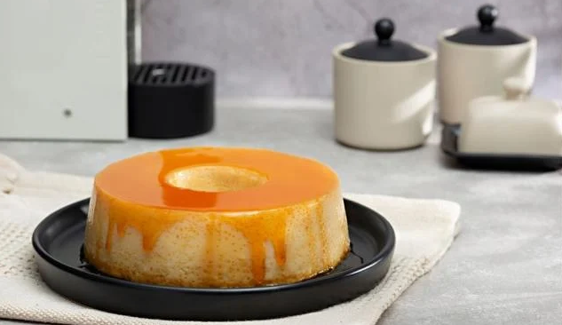

Receita de Pudim

Descrição
Aquela receita que ninguém dispensa: veja como fazer pudim de leite condensado simples e rápido, em um passo a
passo de apenas 40 minutos. Contando com apenas 5 ingredientes, essa receita é sucesso garantido!
Ingredientes
- 1 Lata de Leite Condensado
- 1 Xícara de Leite de Vaca
- 4 Ovos de Inteiros
- 1 Xícara de Açúcar
- 1/3 de Xícara de Água
Modo de Preparo
Tempo de Gasto: 40 minutos
- Em uma panela, misture a água e o açúcar até formar uma calda.
- Unte uma forma com a calda e reserve.
- Bata todos os ingredientes no liquidificador e despeje na forma caramelizada.
- Leve para assar em banho-maria por 40 minutos.
- Desenforme e sirva.